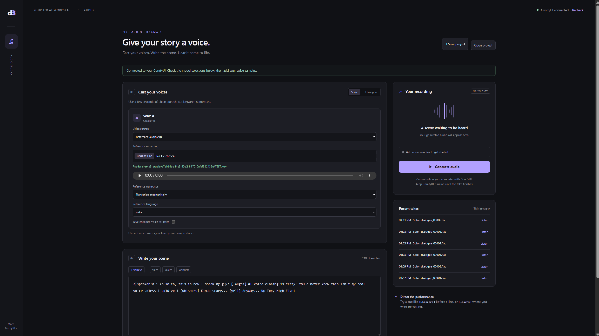

DRAMA 3 AUDIO STUDIO · PUBLIC RELEASE 0.1.0
This is a local browser frontend for ComfyUI and the separate Drama 3 engine. The complete installation guide, model links, first test, troubleshooting, and hardware requirements are in README.md. Read it on the GitHub repository page or open the file in a text editor.

The node author lists approximately 32 GB system RAM for W4, 40 GB for W6, or 48 GB for FP8/INT8, with an NVIDIA GPU baseline of 8 GB VRAM for experts in RAM. These estimates do not guarantee success. A real RTX 5080/32 GB test needed a memory workaround and reached 98% system RAM usage.
Our practical regular-use target is 64 GB RAM. That is a project recommendation, not a changed upstream minimum. See the source links and full qualifications near the end of README.
custom_nodes folder.drama3_audio_studio, into the same custom_nodes folder. Its __init__.py, web, and extension must be directly inside that folder.models/diffusion_models and its codec into models/vae. Optional Qwen ASR files go in models/asr.Choose Solo, upload a clean reference clip, choose a typed transcript, and enter exactly what the recording says. Write one short test sentence. Select your model and codec. Start with experts in RAM, expert cache 1 GB, and second GPU none. Click Generate once.
If loading fails at pin_memory=True, README describes the existing ComfyUI flag --disable-pinned-memory and how to add it in Desktop Startup Args. This may reduce performance and does not remove the model’s RAM requirements.
Preparing to publish this source? Read PUBLISHING.md. Built with Fish Audio. Frontend code: GPL-3.0-or-later; external model licenses remain separate.